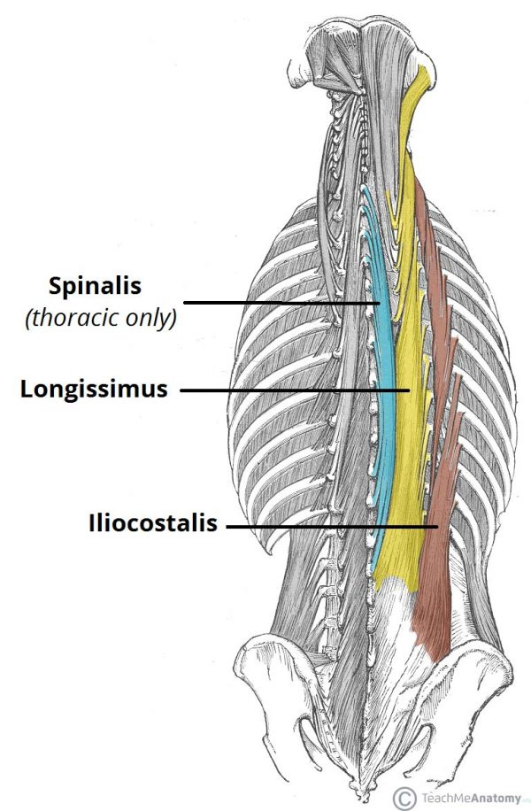
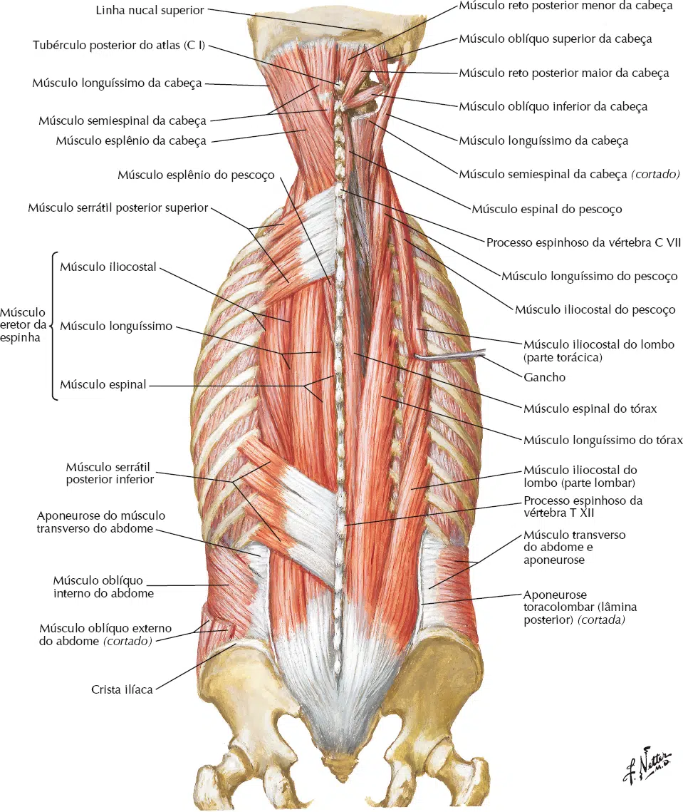
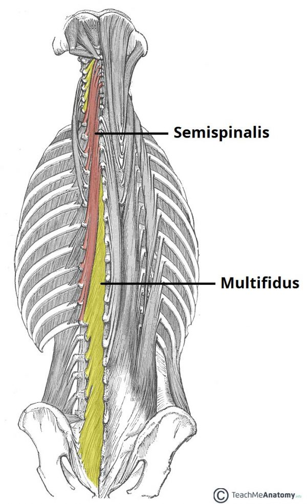
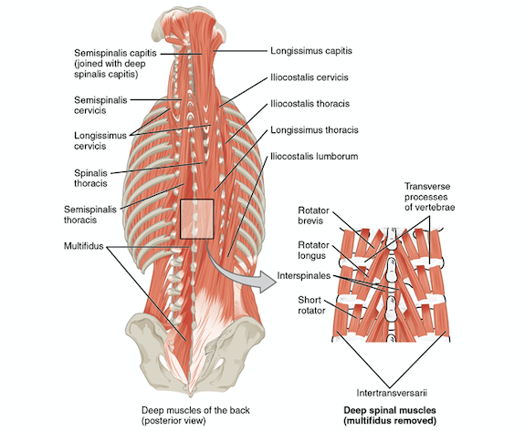

Os músculos próprios do dorso (intrínsecos do dorso) são inervados pelos ramos posteriores dos nervos espinais.
Eles mantêm a postura e controlam os movimentos da coluna vertebral.
Esses músculos, que se estendem da pelve até o crânio, são revestidos por fáscia muscular que se fixa medialmente ao ligamento nucal, às extremidades dos processos espinhosos das vértebras, ao ligamento supraespinal e à crista mediana do sacro.
A fáscia fixa-se lateralmente aos processos transversos cervicais e lombares e aos ângulos das costelas.
As partes torácica e lombar da fáscia muscular constituem a aponeurose toracolombar.
Estende-se lateralmente a partir dos processos espinhosos e forma um revestimento fino para os músculos intrínsecos da região torácica e um revestimento espesso forte para os músculos na região lombar.
Os músculos próprios do dorso são classificados em camadas:
Superficial, intermédia e profunda, de acordo com sua relação com a superfície.
Camada superficial
Grupo dos músculos
esplênios
Esplênio da cabeça
Inserção Superior: 1/3 lateral da linha nucal superior e processo mastóide do osso temporal. Inserção Inferior: Processos espinhosos da C7 à T4. Inervação: Nervos espinhais do segmento correspondente. Ação: Extensão, inclinação e rotação homolateral da cabeça.
Esplênio do pescoço
Inserção Superior: Processo transverso das 3 primeiras vértebras cervicais. Inserção Inferior: Processo espinhoso da T3 à T6. Inervação: Nervos espinhais do segmento correspondente. Ação: Extensão, inclinação e rotação homolateral da cabeça.
NETTER: Frank H. Netter Atlas De Anatomia Humana. 8 ed. Rio de Janeiro: Elsevier, 2024.
Camada intermédia
Grupo dos músculos
eretores da espinha
O músculo eretor da espinha é o principal extensor da coluna vertebral e é dividido em três colunas:
O músculo iliocostal forma a coluna lateral, o músculo longuíssimo forma a coluna intermédia e o músculo espinal, a coluna medial.
Iliocostal
Porção Cervical: Inserção Superior: Processos transversos de C4 à C6. Inserção Inferior: Ângulo da 3ª à 6ª costelas.
Porção Torácica: Inserção Superior: Ângulo da 6 primeiras costelas e processo transverso de C7. Inserção Inferior: Ângulo das 6 últimas costelas.
Porção Lombar: Inserção Superior: Ângulo das 6 últimas costelas. Inserção Inferior: Face dorsal do sacro. Inervação: Nervos espinhais (ramos dorsais). Ação: Extensão e inclinação homolateral da coluna vertebral.

https://teachmeanatomy.info/
Longuíssimo do tórax
Porção da Cabeça: Inserção Superior: Processo mastóide. Inserção Inferior: Processos transversos de T1 até T4 e processos articulares de C4 até C7.
Porção do Pescoço: Inserção Superior: Processos transversos de C2 à C6. Inserção Inferior: Processos transversos de T1 à T4.
Porção Torácica: Inserção Superior: Processos transversos das vértebras torácicas e das 10 últimas costelas. Inserção Inferior: Processos transversos das vértebras lombares e aponeurose lombocostal. Inervação: Nervos espinhais (ramos dorsais). Ação: Extensão e inclinação homolateral da coluna vertebral.
https://teachmeanatomy.info/
Espinal
Porção da Cabeça: Ligado ao semi-espinhal da cabeça.
Porção do Pescoço: Origem: Ligamento nucal e processos espinhosos de C7 a T2. Inserção: Processos espinhosos C2 a C4.
Porção do Tórax: Origem: Processos espinhosos T11 a L2. Inserção: Processos espinhosos das torácicas superiores (varia de 4 a 8). Inervação: Nervos espinhais (ramos dorsais). Ação: Extensão da coluna vertebral.
https://teachmeanatomy.info/

NETTER: Frank H. Netter Atlas De Anatomia Humana. 8 ed. Rio de Janeiro: Elsevier, 2024.
Camada profunda
Grupo dos músculos
transversoespinais
O músculo semiespinal é o mais superficial do grupo.
Como seu nome indica, origina-se aproximadamente na metade da coluna vertebral.
É dividido em três partes, de acordo com as fixações superiores: músculos semiespinal da cabeça, semiespinal do tórax e semiespinal do pescoço.
Semiespinal da cabeça
Inserção Superior: Entre a linha nucal superior e inferior. Inserção Inferior: Processo transverso da T1 à T7 e processos articulares da C5 a C7. Inervação: Nervos espinhais do segmento correspondente. Ação: Extensão da cabeça e inclinação homolateral da cabeça.

https://teachmeanatomy.info/
Semiespinal do tórax
Inserção Superior: Processo espinhoso C6 a T4. Inserção Inferior: Processos transversos das T6 à T10. Inervação: Nervos espinhais (ramos dorsais). Ação: Extensão e rotação contralateral do pescoço.
https://teachmeanatomy.info/
Semiespinal do pescoço
Inserção Superior: Processo espinhoso da C1 à C7. Inserção Inferior: Processos transversos das T1 à T6. Inervação: Nervos espinhais (ramos dorsais). Ação: Extensão e rotação contralateral do pescoço.
https://teachmeanatomy.info/
Multífidos
Origem: Dorso do sacro, EIPS, processos mamilares das lombares, processo transverso das torácicas e processos articulares da C4 à C7. Inserção: Processo espinhoso de 3 a 5 vértebras acima. Inervação: Nervos espinhais do segmento correspondente. Ação: Estabilização e extensão da coluna vertebral.
https://teachmeanatomy.info/
Rotadores
Inserções: Estende-se do sacro até a C2. Ligam o processo transverso de uma vértebra com o processo espinhoso da vértebra suprajacente. Inervação: Nervos espinhais do segmento correspondente. Ação: Extensão e rotação contralateral da coluna vertebral.

NETTER: Frank H. Netter Atlas De Anatomia Humana. 8 ed. Rio de Janeiro: Elsevier, 2024.